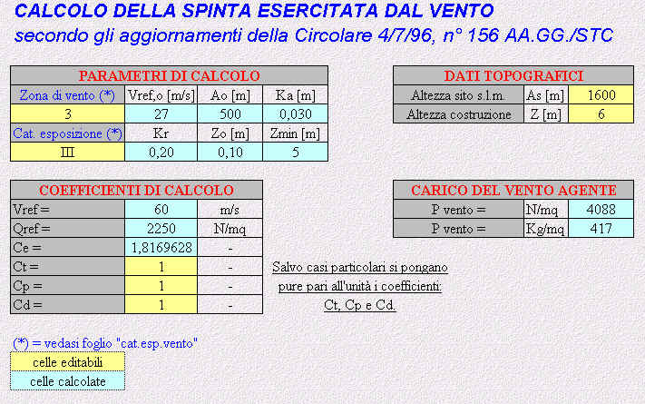

Viene presentato in dettaglio il calcolo della spinta del vento in
funzione dei parametri scelti nella fase di input. 1) Parametri immessi per il calcolo Viene inoltre data la rappresentazione grafica della tipologia di copertura relativa al calcolo, completa di schema e descrizione dei coefficienti di carico previsti dalla norma. Si riporta un esempio di calcolo: ---------------------- *** ------------------------ 
|